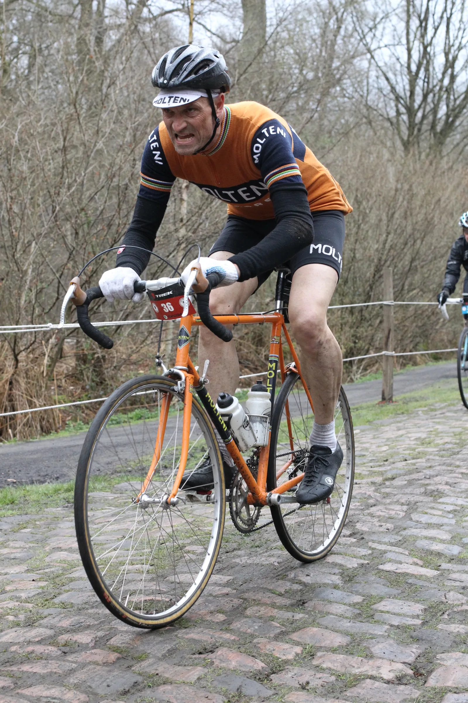
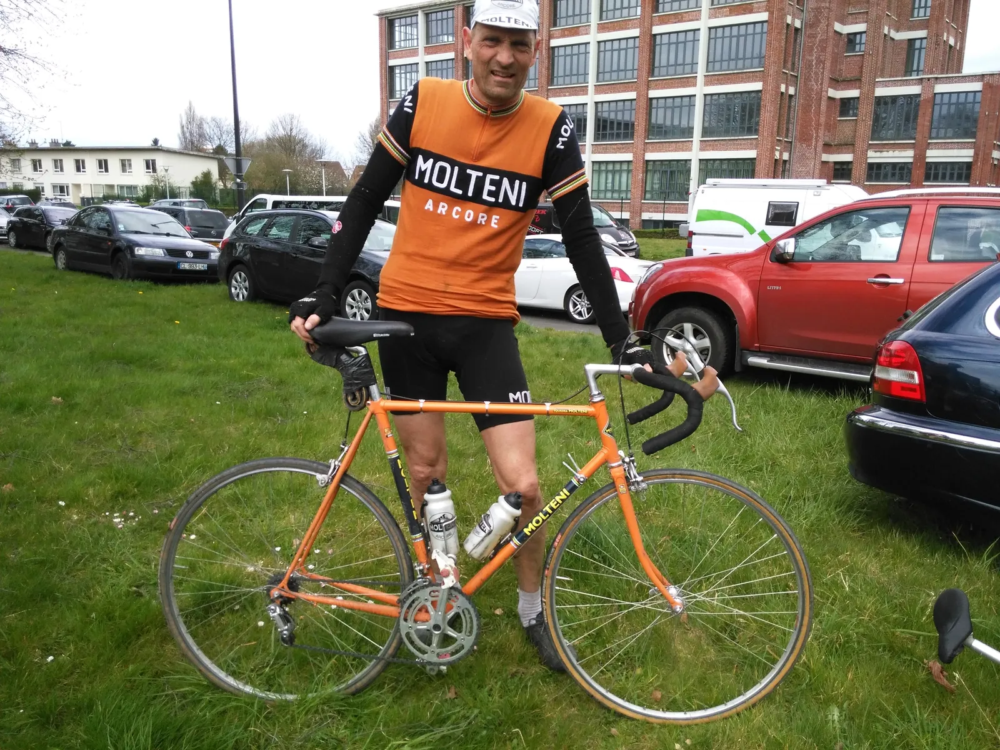
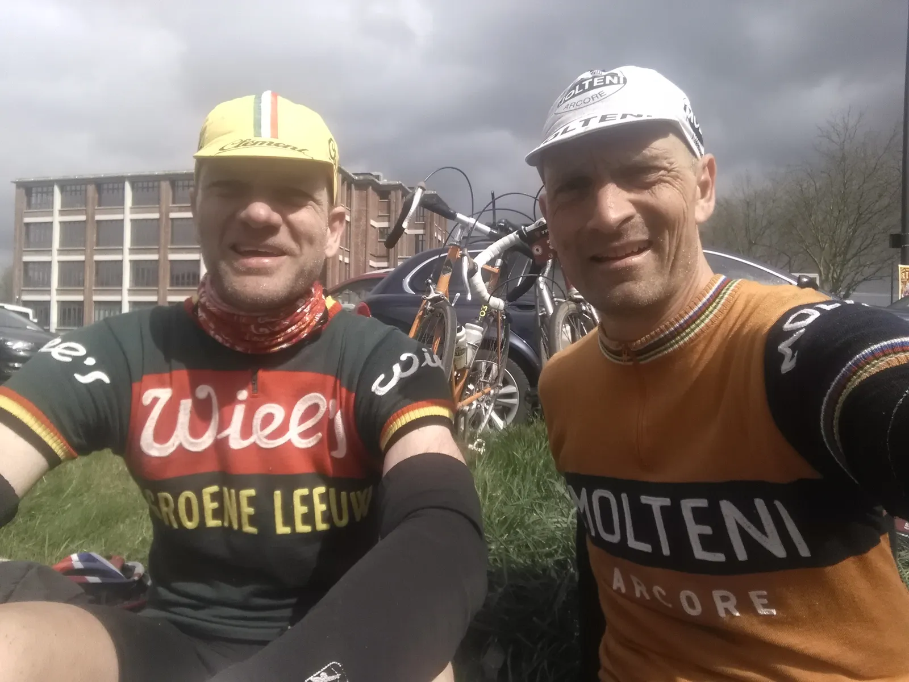

Paris-Roubaix på stål og i uld

Af Niels Bjørnsteen
Regnen slår mod ruderne på bussen. Det nordfranske landskab ligger gråt og regnvådt i morgendisen. Og venter. Jeg havde egentlig godt set de første stænk på ruden lidt tidligere, men jeg havde slået det hen. Der ville ikke komme regn.
Forude venter 163 våde kilometer. Over 50 af dem på brosten. Det er Paris-Roubaix. Vejret dagen før havde været fantastisk. Fuld sol og over 20 grader. Roubaix var i forårshumør.
Godt nok havde vejrudsigten varslet en lille bitte smule regn til morgen. Men da det var under 1 mm, havde jeg optimistisk valgt at lade regnjakken blive på hotellet.
Regn, merinould og plastikpose
Bussen nærmede sig Busigny. Det så gråt og vådt ud. Benene fik en ekstra gang varmecreme og jeg trak mine lange løse ærmer i merinould på. Molteni-kasketten blev sat på plads under den moderne hjelm – og jeg steg ud af bussen.
Det var heldigvis mildt i vejret. Men en stille silende støvregn lå over den lille franske bondeby, der denne morgen var begravet i et trafikkaos af busser og personbiler – og et par tusind motionscykelryttere.
Busigny var op den anden ende – og var startbyen for den længste distance (163 km) ved Paris-Roubaix Challenge 2015. Der findes rigtig meget godt moderne cykeltøj nu om dage. Vindtæt, vandafvisende og samtidig helt åndbart. Det er squ smart – ingen tvivl om det.
På vej ned mod startstregen tænkte jeg, at hvis denne silende støvregn blev ved, ville det blive en meget lang og våd dag i mit merinould-cykeltøj. I det samme kørte jeg forbi en skraldespand. En plastikpose med et halvt flûte lå øverst. Jeg tømte posen og stoppede den ind på maven – mellem min Molteni jersey og min merinould-svedtrøje. Så havde jeg windbreaker!
Starten
Starten var fri start fra 07.00 – 09.00. Vores bus var blevet forsinket, så vi var først ankommet Busigny ved 07.30-tiden. Min cykelven Per og jeg rullede ned mod startområdet. Vi rullede igennem startportalen – og hurtigt fandt vi ud af, at stort set alle ryttere fortsatte med at rulle stille og roligt. Det var ikke vores plan. Vi ville have varmen og vi ville derud af.
Vi gav den godt med gas i starten. Vi kørte fra gruppe til gruppe. Ingen grupper kørte dog stærk nok til, at vi ville lægge os dér. Regnen silede ned, men vi ænsede den ikke. Det gav varmen at lægge ud med tempokørsel – så plastikposen på maven røg ud allerede i den første landsby vi kørte igennem.
Efter 13 km ramte jeg den første Pavé. En 3-stjernet pavé på 2,2 km. Jeg kom ind med god fart – godt 35 km/t – og jeg trådte igennem. Det er den simple opskrift: Træd til og hold høj fart. Og hold ikke for fast om styret.
Mange ryttere kørte dog betydeligt langsommere. Nogle stod næsten stille eller zig-zaggede fra den ene side til den anden – så der blev overhalet indenom, udenom – og nærmest i spring.
Ikke mange kilometer efter ramte jeg pavé 26, 25 og 24, der kommer lige i efter hinanden, med kun få hundrede meter asfalt imellem. Sammenlagt giver de tre paveer godt 6 km brosten. Det var et frygteligt langt stykke. Godt 15-17 minutter i træk, hvor alt hopper og ryster. Og på grund af regnen, var brostensstykkerne tillige meget glatte og smattede.
Jeg kunne flere gange mærke, at for- eller baghjulet skred ud. Dér er det, at man ikke skal stoppe med at træde – men fortsætte. Efter godt 40 km trak Per fra. På en pave 24 ramte han et godt flow, mens jeg kæmpede med rytmen efter et par overhalinger, der gik lidt skævt. Regnen var stoppet og det lysnede mod nord. Dog kom der kort efter en voldsom byge. Det var heldigvis dagens sidste.
Brosten, græs, jord og kolort
Glem alt sammenligning af brostenspaveerne i nordfrankrig med brostensveje i Danmark. De er lagt af brolæggere, som kan deres håndværk – og har brugt fine brosten.
Langt de fleste paveer i Paris-Roubaix, er mere eller mindre deforme. Mellemrummene mellem brostenene er fra 3 – 10 cm. Ja, mange gange mangler der ligefrem en brosten. På nogle af paveerne er der en høj midte, hvor der ofte er lidt græs, jord eller kolort mellem brostenene. Dér er der lidt behageligere at køre. Med mindre det er glat føre. Så er forhøjningen ekstrem glat – og en blanding af jord og kolort står som en stråle op efter dækkene.
På andre paveer er der i siden lidt jord, græs eller løst grus. Dér er der også fint at køre, men der er huller – så dér skal man køre med ekstrem agtpågivendhed – og nærmest scanne rabatten 10-15 meter frem.
Knivskarpe italienske veteraner
Efter godt 42 km kom jeg til første depot. Jeg var godt frisk og inde i en god rytme. Jeg havde stadig en halv liter vand, et par gels og en pakke druesukker i baglommerne – så jeg valgte ikke at køre ind i depotet.
Hele den gruppe jeg lå i drejede ind i depot – så pludselig lå jeg alene. God 500 meter længere fremme kunne jeg skimte Per. Han lå også på mellemhånd. Der var mod-sidevind – så jeg valgte at holde lidt igen indtil der kom en lille gruppe op bagfra.
En lille gruppe på 5 italienske herre med gråsprængt hår og knivskarpe markerede ben kom op. De lå deres på toplækre carbon Colnago’er og tog rulleføringer – og farten var vel omkring 40 km/t. De kørte godt, de så stadig skarpe ud – og de havde helt sikkert kørt cykelløb i mange år. Et par anerkendende blikke, et nik og smil – samt et “Molteni” blev det også til, da de så, at jeg hægtede mig på og deltog i kæden.
Ikke så mange kilometer efter ramte vi paveen Verchain à Quérenaing. Den smalle asfalt-landevej går pludselig over i brosten. Og samtidig en lille smule nedad. Jeg lå forrest da vi ramte paveen. Da jeg var et par meter inde på paveen, så jeg ud af øjenkrogen, at en af de italenske herre røg ud over styret med et hyl. Hans cykel nåede lige at slå en saldo og snitte mit baghjul. Mit blik var stift rettet mod pavéen. Ikke noget med at vende hovedet.
Jeg trykkede igennem – og forsøgte at holde mig på toppen af brostenene, der lå fuldstændig vind og skævt. Paveen var med 1,5 km forholdsvis kort. Da jeg var igennem den så jeg mig tilbage. Den italienske gruppe var væk.
Trouèe Arenberg

Efter yderligere 5 paveer, hvor mine hænder og overarme så småt begyndte at smerte af slagene og rystelserne, kunne jeg i det fjerne se de legendariske minetårne lige før Arenberg Skoven.
Arenberg paveen er på fem stjerner, og er 2,4 km lang – og den er som ingen af de andre paveer. Brostenene er så dårligt lagt og vejen så deform, at man tror det er løgn.
Vi har alle hørt Jørgen Leth fortælle, hvordan disse brosten nærmest ligger smidt og fordelt med en møggreb. Det er ikke helt løgn. Og det er surrealistisk så hårdt, at de slår op i styret. Jeg kom ind med over 35 km/t. De første 100 meter gik fint, men så klumpede det sammen.
Arenberg er første pave for de ryttere, som havde valgt den kortere 139 km rute. Det vil sige, at de kom efter 45 km asfalt – og direkte ind på Arenberg. Mange af dem stod næsten på tværs. Nogle trak ude i siden. Jeg forsøgte at holde farten – og holde mig på midten af paveen. Men hver gang jeg skulle overhale mistede jeg lidt moment.
Pludselig kommer der en rytter bagfra. Han havde voldsom meget fart på. Han kørte inde i højre side. Jeg tror han prøvede at ramme lidt græs og dermed lidt mere jævnt underlag. Men med ét slår han et slag og vælter lige foran mig. Jeg kunne ikke nå at undvige. Jeg kørte halvt hen over ham – og så røg jeg ned.
Jeg ramte ned i brostenene med mit venstre knæ og albue. Røven fik jeg plantet på hans forgaffel eller forhjul. Knas sagde det. Noget carbon knækkede… Jeg rejste mig hurtigt op. Jeg var ok. Tog fat i min cykel. Styret sad skævt. Jeg rettede det lynhurtigt og tjekkede: Knæ ok. Albue ok. Forhjul ok. Baghjul ok. Baggear ok. Og kørte så videre.
Det var svært at komme op i fart igen. Mine hænder og arme gjorde ondt og de sidste 700-800 meter stiger svagt. Samtidig er Arenberg Skovens brosten i skygge hele tiden. Det vil sige, at de stort set altid er glatte og fedtede. Efter Arenberg var der godt 100 km hjem – og endnu 16 paveer!
Noget om udstyr
Gennem cykelhistorien, er der blevet eksperimenteret meget med udstyret i forbindelse med Paris-Roubaix. Forskellige former for støddæmpere, ekstrem lange hjulakselafstande, specielle rammegeometrier og andre sære påfund.
Dæktrykket bliver der også eksperimenteret meget med. De professionelle ryttere kører med lukkede ringe og med et lavt tryk. Normalt kører en professionel rytter med 110 psi (alt efter ryttervægt). Men ved Paris-Roubaix er det ikke unormalt, at trykket kun er nede på 60-65 psi. Samtidig er det ringe med en bredde på 27-30 mm.
Med et så lavt dæktryk bliver kørslen hen over brostenene noget mere behagelig. Men jo lavere dæktryk – desto større risiko for at punktere ved “snake-bite” eller “pinch flats”, som det også bliver kaldt, når dækket bliver trykket i bund og fælgen niver hul i slangen.
Jeg oplevede dilemmaet: Skulle jeg køre med lavt tryk for at opnår mere komfort – men risikere punktering? Eller skulle jeg have mere tryk i ringene, få flere tæsk i hænder og arme – men minimere chancen for punktering?
Jeg valgte at køre med lukkede ringe – med 6 bar (87 psi) i både for- og bagring. Min “Molteni” cykel bestod af en gammel Centurion Super le Mans ramme i Columbus Gara, som jeg havde slebet ned og omlakeret i den ikoniske Molteni-orange farve.
Cyklen var udstyret med med:
- Campagnolo Nuovo Record for- og bagskifter.
- Campagnolo Nuovo Record krank med 177,5 mm lange arme.
- Bremser og greb: Modolo Speedy.
- Hjul: Campagnolo Nuovo Record nav med Mavic Monthlery Route.
- Ringe: Challenge Paris Roubaix 27 mm med Schwalbe Doc Blue selant.
- Styr og frempind: Cinelli.
- Sadel: Turbo Bernard Hinault.
- Pedaler: Look PP76.
- Vægt: 11,2 kg.
Stålcyklen klarede turen upåklageligt. Ikke en skrue, bolt eller fittings løsnede sig. Hjulene havde jeg selv strikket og spændt op: De er stadig snorlige.

Hård modvind og tåbelige følgebiler
Godt 10 km efter Arenberg lå depot nummer to. Jeg var løbet tør for vand – så jeg måtte ind og tanke. Jeg tankede hurtigt 2 x 0,5 liter Isostar, som er en glimrende sportsdrik. En håndfuld rosiner, en håndfuld TUC-kiks røg indenbords og en belgisk vaffel i baglommen – og så afsted.
Det var for længst blevet tørvejr – men det var blæst op. Nogle strækninger lå i en strid modvind. Men omvendt var flere strækninger med en skøn side-medvind.
Pavee nr 14, Tilloy à Sars-et-Rosiàres, lå i morderisk hård vind. Det er en fire-stjernet pavé på 2,4 km. Over halvdelen var i piv-modvind. Omkring 8-9 m/sek på åben mark. Det var et smertehelvede.
En bizar oplevelse efter Arenberg og frem mod Roubaix, var, at der pludselig dukkede enkelte “følgebiler” op. Ikke officielle følge- eller servicebiler. Nej, det var private biler (Hollandske) med kvinder bag rattet, som åbenbart syntes, at de skulle køre servicebil for deres mænd. Eller havde fået besked på det. Men det er sku ikke smart at lege følgebil, når der egentlig ikke er noget felt – eller nogen kortege. Og når manden ligger med 20-22 km/t på en pavé. Og konen bagved i deres store Audi A6 – med forskræmt blik og små svedige håndflader – og leger servicebil. Der blev råbt, kommenteret en del af disse hollændere – og fruer, mens vi overhalede.
Fuldstændig fantastisk fornemmelse
Efter paveen 14 var der kørt 100 km. Kun 63 km igen – og 12 paveer tilbage! Heriblandt de to 4-stjernede Auchy à Bersée (11) og Camphin-en-Pévèle (4). Og de to legendariske 5-stjernede Mons-en-Pévèle (10) og Carrefour de l’Abre (3).
Det var en konstant nedtælling. 13, 12, 11, 10 … Mine hænder og arme smertede. Mine ben havde det heldigvis fantastisk godt. Og jeg havde masser af energi. Jeg trak aktivt i de grupper jeg landede i.
De to fem-stjernet paveer Mons-en- Pévéle og Carrefour de l’Abre var egentlig ikke så slemme – men lange som ind i Helvede. Der var dog flere steder en rabat med grus eller fastkørt jord, hvor man kunne få lidt mere rolig kørsel.
Efter Carrefour de l’Abre var der kun få kortere paveer tilbage. Roubaix kunne skimtes i horisonten. Det var en fuldstændig fantastisk fornemmelse at køre ind gennem Roubaix. Forstæderne, den lange allé mod Roubaix Velodromen.
Og kulminationen er unik. Efter 163 km på brosten, i regn, i modvind, i med- og sidevind, på jord og i kolort – at dreje skarpt til højre og ind på den legendariske Roubaix Velodrom. Ubeskriveligt og helt vidunderligt.
